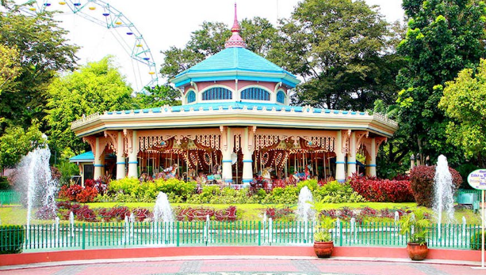
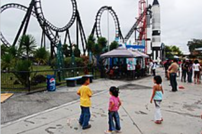

Enchanted Kingdom
If you're seeking fun and exhilarating adventures near the metro, you may want to visit the Enchanted Kingdom in Barangay Balibago, Santa Rosa City, Laguna. It is considered the first and only world-class theme park in the Philippines. Enjoy unlimited rides inside this 25-hectare park that features eight themed zones with over 20 attractions. AGILA: The EKsperience is their latest attraction that showcases around 20 majestic spots in the Philippines, from Batanes to Cagayan de Oro. It is the first and the largest flying theater in the world. By showcasing the beauty of the Philippine Archipelago, AGILA takes you on an interactive flight simulation to appreciate and understand the importance of saving the environment for our critically endangered animals like the Agila.
When you enter the grounds, you will be greeted by a large torii or a traditional Japanese gate. These gates are often placed in shrines or spots that hold religious significance to let visitors know that they are about to enter a sacred space. Past the gate, you will see open spaces of grass and towering trees that offer shade for those hoping to enjoy a picnic. Further on, you will find a still, man-made lagoon that adds to the overall tranquil atmosphere of the garden.
The Enchanted Kingdom offers an unforgettable magical experience with your friends and family. Those who want to celebrate their birthday at the theme park can get a free pass for all rides and a 10% discount on regular-day tickets for their companions. If you are looking for souvenirs or unique EK items, you can drop by Edgar’s Specialty Shop for character pillows, shirts, or hand-sewn key chains. You can also explore other shops scattered around the theme park, including Harry Houdini’s Magic Shop and Princess Victoria’s Dream Shop for adorable gowns and tutus.
The initial design of the park, which was presented to the Mamons by the consultants they brought in, was heavily inspired by Philippine architecture. The concept was not chosen since the Mamons preferred a fantasy-oriented design. Mario Mamon stated that if the initial design was used instead, it would result in visitors seeing what they see "outside in their normal lives" which he remarks would "sort of break the magic".
The rides and attractions of the park are scattered across seven themed zones. The zones are
- Victoria Park - it is patterned after the Victorian Era
- Portabello, - is based in the Caribbean/West Indies
- Boulderville, - is similar to the fictional town of Bedrock from The Flintstones Midway
- Boardwalk, - is based on 1930s Coney Island and features the most rides.
- Brooklyn Place, - is based on 1940s New York and the silent film era.
- The spaceport, - is dedicated to the Space Age
- Jungle Outpost - is based on the Amazon Jungle in South America.
Future zones planned include a zone dedicated to the amusement park's mascot, Eldar, as well as a zone focusing on Philippine culture, dubbed the Cultural Zone, which recalls the initial concept for the park.
Space shuttle roller coaster
Enchanted Kingdom experienced financial difficulties in 1997, 2007, and 2008 but since 2009, the park has received a steady increase in regards to its number of visitors However, in 2013 , the park experienced a drop in attendance due to bad weather conditions in the latter half of the year which included Typhoon Haiyan (Yolanda). In 2015, it was reported that 10 percent of the park's visitors were foreigners, mostly Chinese and Koreans In the same year, 1.8 million people visited the park, registering its largest attendance in its 20-year history